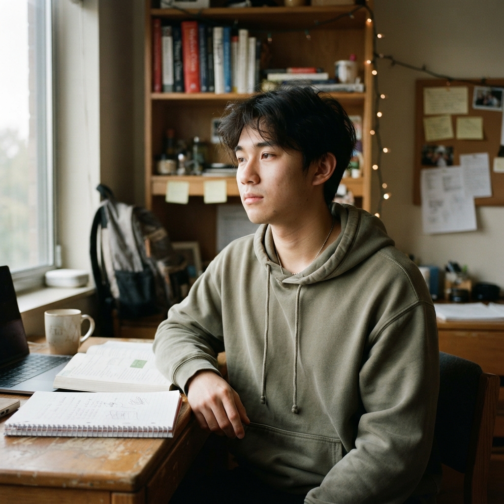
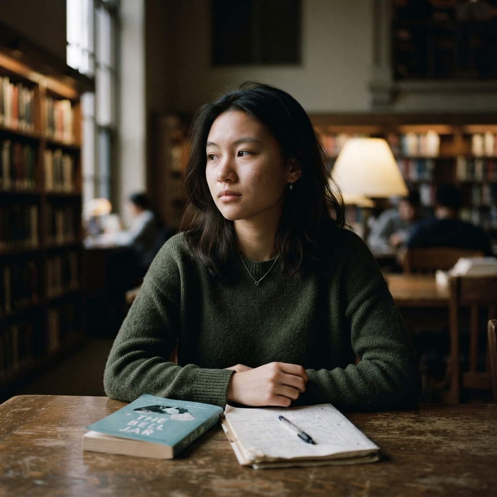

选择一个情境，开始练习
从学生的具体处境出发，练习倾听与回应。
我的案例
小陈
大二 · 电气工程 · 导入于 10月24日
查看案例

小陈大二 · 电气工程
最近，他开始频繁缺课
连续几次没有到课。他说：“去了也听不懂，反正都一样。”
了解困难 · 回应挫败感5–8分钟

小许大一 · 计算机科学
第一次考试，让他开始怀疑自己
最近一次测验没有通过。他有些失落，也不太愿意和同学讨论。
理解压力 · 支持适应5–8分钟

小周大三 · 软件工程
面对补考，他不知道如何开始
几门课程需要补考。他想做些改变，但迟迟没有安排复习。
澄清顾虑 · 商量行动8–10分钟
吴
小吴大二 · 数学
考试前总是心慌
临近考试就睡不着，总担心考不好，越复习越紧张。
理解焦虑 · 具体化5–8分钟
郑
小郑大四 · 环境设计
分手之后一直走不出来
最近情绪低落，课也不太去上，提起这件事就流泪。
接纳情绪 · 支持8–10分钟
孙
小孙大三 · 汉语言文学
说不清为什么不开心
连续一个多月提不起兴趣，睡不好，也说不清原因。
倾听 · 评估状况8–10分钟
林
小林大一 · 计算机科学
和室友几乎不说话了
因为作息和卫生闹过几次，现在互相不理，宿舍很压抑。
了解分歧 · 协商边界5–8分钟
冯
小冯大二 · 工商管理
小组作业里总觉得自己被排挤
讨论时没人接他的话，他开始怀疑是不是自己的问题。
澄清感受 · 核对事实8–10分钟
何
小何大三 · 英语
和导师沟通总是紧张
每次见导师前都反复打腹稿，到了跟前还是说不清楚。
理解紧张 · 练习表达5–8分钟
杨
小杨大二 · 土木工程
家里希望他退学
父亲说供不起了，让他先工作，他自己还想把书读完。
了解处境 · 支持选择10–12分钟
罗
小罗大一 · 临床医学
父母正在闹离婚
最近总惦记家里的事，晚上给母亲打电话到很晚，白天没精神。
接纳情绪 · 稳定支持8–10分钟
唐
小唐大三 · 会计学
一边上课，一边照顾生病的母亲
每周往返医院，作业和出勤都受到影响，却没和任何人说。
了解负担 · 商量安排8–10分钟
韩
小韩大四 · 机械设计
考研还是就业，一直定不下来
两边都在准备，结果哪边都没有进展，越拖越焦虑。
澄清目标 · 比较选项8–10分钟
曹
小曹大三 · 新闻传播
投了很多简历，都没有回音
投了三十多份，只接到两次面试，开始怀疑自己是不是不行。
理解挫败 · 调整策略5–8分钟
邓
小邓大四 · 生物工程
家里安排的工作，他不想去
父母托人找了一个岗位，他更想自己试试，但不敢直说。
尊重自主 · 讨论风险8–10分钟
蒋
小蒋大二 · 建筑学
他说“活着没什么意思”
谈话中冒出这句话，随后说自己只是开玩笑，不愿再谈。
风险确认 · 支持联动10–12分钟
沈
小沈大三 · 物理学
连续几天没有回消息
同学反映他把自己关在宿舍，不上课，也不回群里的消息。
了解状况 · 联系支持10–12分钟
姚
小姚大一 · 公共管理
自伤照片发到了群里
同学转来照片，他本人不愿多说，只说“没事”。
安全确认 · 转介流程10–12分钟
没有找到匹配的案例
换一个关键词，或回到当前案例列表。